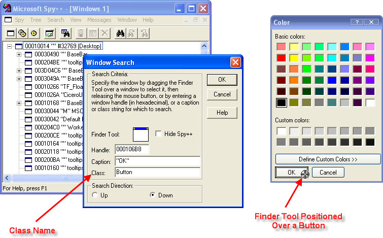

AddWindowClass Method
Window Class name of a class to map to a Standard Window Class name. This will allow the skin framework to skin the new class. For example, the "SysDateTimePick32" class is really just an "Edit" class, so you could call AddWindowClass to map the classes so the skin framework can skin the "SysDateTimePick32" class.
Below is a list of all non-standard Windows Class names known to the SkinFramework, these classes can not be used as a BaseClassName, but you will not need to use the AddWindowClass method to skin them:
ComboBoxEx32, ComboLBox, SysDateTimePick32, SysListView32, ATL:ScrollBar, ThunderRT6CheckBox, ThunderCheckBox, ThunderRT6OptionButton, ThunderRT6CommandButton, ThunderCommandButton, ThunderOptionButton, ThunderRT6Frame, ThunderFrame, ThunderRT6ComboBox, ThunderComboBox, ThunderRT6ListBox, ThunderListBox, ThunderRT6HScrollBar, ThunderHScrollBar, ThunderRT6VScrollBar, ThunderVScrollBar, ThunderRT6TextBox, ThunderTextBox, SliderWndClass, Slider20WndClass, ProgressBarWndClass, ProgressBar20WndClass, TabStripWndClass, msvb_lib_header, ListViewWndClass, ListView20WndClass, TreeViewWndClass, TreeView20WndClass, StatusBarWndClass, StatusBar20WndClass, msvb_lib_toolbar and DTPicker20WndClass.
Standard Window Class name.
Below is a list of all standard Window Class names known to the SkinFramework, these are all values that can be used as a BaseClassName:
ComboBox, Edit, ListBox, ScrollBar, SysHeader32, msctls_statusbar32, SysTreeView32, msctls_progress32, msctls_trackbar32, SysTabControl32, MDIClient, msctls_updown32, ToolbarWindow32, Button and SysPager.
| Xtreme Skin Framework ActiveX Control v15.3 |
Maps one window class name to another when nonstandard class names are used for window classes in some non standard development environments.
Public Sub AddWindowClass( _
ByVal ClassName As String, _
ByVal BaseClassName As String _
) Window Class name of a class to map to a Standard Window Class name. This will allow the skin framework to skin the new class. For example, the "SysDateTimePick32" class is really just an "Edit" class, so you could call AddWindowClass to map the classes so the skin framework can skin the "SysDateTimePick32" class.
Below is a list of all non-standard Windows Class names known to the SkinFramework, these classes can not be used as a BaseClassName, but you will not need to use the AddWindowClass method to skin them:
ComboBoxEx32, ComboLBox, SysDateTimePick32, SysListView32, ATL:ScrollBar, ThunderRT6CheckBox, ThunderCheckBox, ThunderRT6OptionButton, ThunderRT6CommandButton, ThunderCommandButton, ThunderOptionButton, ThunderRT6Frame, ThunderFrame, ThunderRT6ComboBox, ThunderComboBox, ThunderRT6ListBox, ThunderListBox, ThunderRT6HScrollBar, ThunderHScrollBar, ThunderRT6VScrollBar, ThunderVScrollBar, ThunderRT6TextBox, ThunderTextBox, SliderWndClass, Slider20WndClass, ProgressBarWndClass, ProgressBar20WndClass, TabStripWndClass, msvb_lib_header, ListViewWndClass, ListView20WndClass, TreeViewWndClass, TreeView20WndClass, StatusBarWndClass, StatusBar20WndClass, msvb_lib_toolbar and DTPicker20WndClass.
Standard Window Class name.
Below is a list of all standard Window Class names known to the SkinFramework, these are all values that can be used as a BaseClassName:
ComboBox, Edit, ListBox, ScrollBar, SysHeader32, msctls_statusbar32, SysTreeView32, msctls_progress32, msctls_trackbar32, SysTabControl32, MDIClient, msctls_updown32, ToolbarWindow32, Button and SysPager.
The AddWindowClass method is used to map one window class name to another when nonstandard class names are used for window classes in some non standard development environments. For example, the standard Window Class for a button is "Button", but maybe in some environment it is named "S:Button".
So you would need to call AddWindowClass ("S:Button", "Button") to map one class to another and the skin framework can then skin the new class.
To use the AddWindowClass method you will need to know the Window Class name of the component you wish to skin. There are several standard names like "Button" and "ListBox" (noted above), but you will need to use a tool like Microsoft Spy++ (pictured below) to determine the specific Window Class name of the component you wish to skin. In the picture below Spy++ was used to determine the Window Class name of the "OK" button of a color chooser dialog. You would use this same technique to find the Window Class name of other components that might not have a standard Window Class name.
